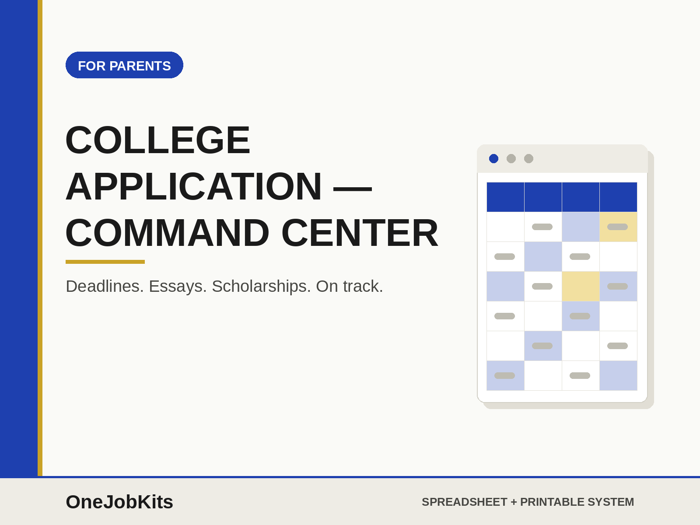

OneJobKits · Kit #16
College Command Center for Parents — college application tracker spreadsheet

Six to fifteen colleges. Each with its own deadlines, essays, portals, recommendation rules and aid forms — and the parent is the project manager nobody appointed. If you are searching for a college application tracker spreadsheet, it is probably because a date nearly slipped: miss one deadline and a door closes for a year.
This page gives you the campaign map free: the junior-to-decision-year timeline plus a one-college tracker sheet. Below it is the command center for the whole campaign — every college, deadline, essay, scholarship and dollar offer in one organised system, run by the parent and shared with the student. It organises the application process; it does not write a single word of your student's applications, and it makes no predictions about any student's chances.
Free download — start with the Parent's College Deadline Map
The Parent's College Deadline Map is a fillable PDF: the junior-to-decision-year timeline on two pages — testing, visits, list-building, application season, aid forms, decision and deposit season — plus a one-college tracker sheet so your family can set up its first school end to end.
Download the free Parent's College Deadline Map (PDF)Get it on Gumroad instead
What the map does not do: it maps one college and the shape of the two years. The full Command Center below runs every college at once — with countdown flags on every deadline, scholarships ranked by the hour, and aid letters compared in the same rows when decision time comes.
What's inside the full kit
- Command workbook (spreadsheet, 10 tabs) — START HERE (the first-week setup in five steps) · College List & Status — every college with type, plan and family priority; live counts and each college's next deadline pulled automatically · Deadline & Requirements — one row per college: plan type (EA/ED/ED2/RD/Rolling), application and aid-form deadlines, CSS Profile and FAFSA flags, testing policy, portfolio/audition, interview, recommendations needed, transcript sent — plus a days-left countdown and auto flag (OVERDUE / DUE SOON / On track / Done) · Scholarship Tracker — 40 rows; amount, deadline and your effort-hours estimate become value per hour and rank, calculated; header totals for potential $, submitted and awarded · Essay Prompt Organiser — prompt source, the prompt text you copy from the portal, word limit, draft-version status and dates (organisation only — no sample content of any kind) · Recommendation Workflow — who was asked, when, their deadline, submitted date, thank-you sent, with auto status · Net-Cost Comparison — cost of attendance minus gift aid = net price per year and × 4 years, per college; the lowest net price is picked out · Aid Offer Comparison — aid letters normalised into the same rows for up to 6 colleges, lowest offer picked out · Campus Visit Log — dates, real travel costs with a running total, ratings and follow-ups · Family Calendar — 26 generic milestones pre-listed by phase; the dates are yours to fill
- Campaign Calendar (fillable PDF, 22 pages) — a how-to cover plus 21 month pages (junior-year September–August, senior-year September–May), each with tick-off tasks, a key-dates box and notes
- Weekly Check-In Worksheet (fillable PDF, 4 sheets) — the 20-minute weekly review: wins, deadlines in the next two weeks, what is stuck, decisions needed, action items with owners
- Setup Guide (PDF, 10 pages) — building the college list, the first-week setup, where official deadlines come from (and the verify habit), the value-per-hour scholarship method, the parent's role in essays and recommendations, and how to read aid offers
- Worked example file — the system filled with a fictional family and student ("Alex Example"), 6 fictional colleges and 6 fictional scholarships (shown below)
- Family tier ($199) adds: the Siblings Dashboard workbook (both students' combined picture, calculated) and a second full workbook copy licensed for the sibling
A filled example — so you can see the finished thing
The kit's own worked example belongs to a fictional family — student "Alex Example", fictional colleges, invented figures throughout. The numbers below are the example file's own entries, with the sheet's arithmetic shown:
| From the example file | The numbers, as entered |
|---|---|
| Net-Cost Comparison — Example State University | Tuition & fees $12,400 + room & board $11,800 + other $3,200 = $27,400 cost of attendance; grants $6,000 + scholarships $2,500 = $8,500 gift aid → net price $18,900/year — the lowest of the four costed colleges, which the sheet's header picks out |
| Net-Cost Comparison — the private colleges | Northfield College (fictional): $66,300 cost − $29,000 gift aid = $37,300 net · Metro Tech Institute: $56,100 − $22,000 = $34,100 · Lakeview University: $62,500 − $23,000 = $39,500 — sticker prices and real prices telling very different stories |
| Scholarship Tracker | 6 scholarships totalling $22,250 in potential — ranked by value per hour: the County Merit Grant, $1,000 for an estimated 1 hour of work ($1,000/hour, and the tracker shows it awarded), outranks the Future Engineers Scholarship, $10,000 for 20 hours ($500/hour) |
| Aid Offer Comparison | Three of the colleges' aid offers entered in the normalised rows — the decision-time view, apples to apples |
That is what the system is for: not more effort, but effort in the right order — deadlines flagged before they bite, scholarship hours spent where they pay, and the final choice made from one honest table.
Who it is for
Parents of high-school juniors and seniors applying to roughly 6–15 colleges, who want the campaign run like a project instead of a scramble — and who want to stay the project manager, not become the applicant.
Who it is not for
Students looking for written or "example" essays — this product contains none and nothing submittable — and families wanting admissions predictions or chances estimates. It is not a counselling service, and it is not affiliated with the Common App, the Coalition, any college, any scholarship provider or any testing agency.
Questions buyers ask
- Does it come with the deadlines already filled in?
- No — deliberately, and this matters. Deadlines and requirements change every year, so the workbook ships with no real deadlines in it, ever. You enter each date from the college's own official website (the setup guide teaches the verify habit), and the tracker then does the watching: a days-left countdown and an automatic flag — OVERDUE, DUE SOON, On track or Done — on every college's next deadline. A tracker is not a deadline database; it is the thing that makes your verified dates impossible to lose.
- Will it help with the essays?
- It organises them — nothing more, by design. The Essay Prompt Organiser holds, per college, the prompt you copy from the portal, the word limit, the draft-version status (Not Started → Outline → Draft 1 → Draft 2 → Final) and the target and final dates. The product contains no essays, no example essays and nothing that can be submitted as application work, because the writing belongs to the student — and admissions offices can tell the difference.
- How does the scholarship ranking work?
- By value per hour of the student's time. Each scholarship row carries its amount and your honest estimate of the effort hours it will take; the sheet calculates value per hour and ranks the list, with header totals for potential dollars, submissions and awards. In the worked example, a $1,000 local grant needing one hour of work ($1,000/hour) outranks a $10,000 scholarship needing twenty hours ($500/hour) — so the family works the list in the order that respects the student's scarcest resource.
- How do we compare aid offers when the letters all look different?
- The Aid Offer Comparison normalises them: up to six colleges side by side in the same rows — sticker price, grants, scholarships, total gift aid, work-study, loans, net price, four-year net, out-of-pocket, renewal GPA and accept-by date — and the lowest offer is picked out automatically. The Net-Cost Comparison does the same job earlier in the cycle, before offers arrive, from each college's published costs and your aid estimates.
- We have twins / two kids applying — what does Family add?
- A second full workbook licensed for the sibling, plus a Siblings Dashboard: Student A's numbers pull in automatically from their workbook's tabs, you type Student B's headline numbers from theirs, and the combined family picture — colleges, submissions, scholarship dollars, lowest net price, fees — calculates itself. One campaign headquarters for the whole family.
- What does the weekly rhythm look like?
- Twenty minutes, on paper: the Weekly Check-In Worksheet (fillable, 4 sheets) covers wins, deadlines landing in the next two weeks, what is stuck, decisions needed, and action items with owners. The Campaign Calendar (22 fillable pages — junior-year September through senior-year May) holds the month-by-month plan on the wall. The system is built so the process runs on that rhythm instead of on deadline-eve panic.
- What does the free Deadline Map cover, and what does the full kit add?
- The free download is the junior-to-decision-year timeline on two fillable pages, plus a one-college tracker sheet — enough to set up your first school end to end. The full Command Center runs all of them: every college's deadlines and requirements with countdown flags, scholarships ranked, essays and recommendations tracked, visits logged, and net costs and aid offers compared in the same rows.
Prices
Standard (one student): $149 · Family (two siblings / twins licence): $199 — one-time payment, digital download. No subscription; the files are yours.
Can't find the kit you need?
We build it. Ask us — first asker gets it at half the shelf price. Tell us the job at onejobkits.com and we will build the kit for it.
Related kits
Please know: this is an organiser only — not admissions, financial, or educational advice, and not affiliated with the Common App, the Coalition, any college, any scholarship provider, or any testing agency. It contains no essays and nothing that can be submitted as application work, and it makes no predictions about any student's chances. Deadlines change every year: verify every date on the college's own official website before relying on it. The example family, colleges, scholarships and figures are fictional.